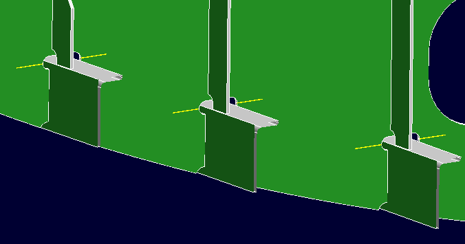
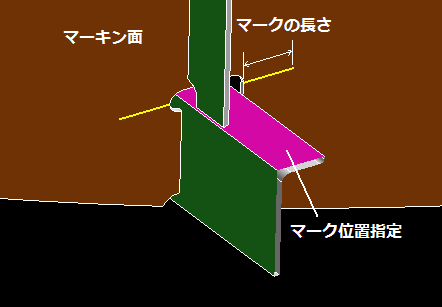
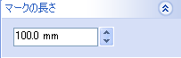

トップマーク線
板部材に工作属性として”トップマーク線”を設定します。この線は部品図を作成する際にマーキン線として描かれます。


操作方法
トップマーク線を描くフェイス、トップマーク位置となるフェイス（貫通するロンジのフランジ面）を選択します。プレビューが表示されますので、位置、長さの確認後、OKボタンで確定します。
属性を削除する場合は通常の要素と同様、属性要素を削除します。
パラメータ
- マーキン面
トップマーク線を描く面を選択します。
- マーク位置指定
トップマークの位置となる要素を選択します。選択可能な要素は、フェイス、シートボディ、エッジ、線、ソリッド（条材）です。
フェイス、シートボディを選択した場合はマーキン面との交線上、エッジ、線を選択した場合はマーキン面上に投影した線、条材ソリッドを選択した場合はそのフランジ面との交線の位置をトップマークの位置とします。
- マークの長さ

トップマーク線の線分の長さを設定します。